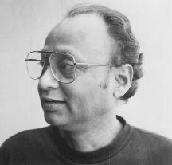

JAYANTA MAHAPATRA
[Sahitya Academy Award Winner &
Gangadhar Meher National Award winner for Poetry]
Jayanta Mahapatra has won prominence for his powerful, haunting and visionary work. Personal and meditative, it is infused with a deep sense of suffering. In writing about the people, landscape and religion of India of gods casually breezing through the air, among bones (Idyll), he explores universal issues of love and death, separation and solitude.
His many collections include:
A Rain of Rites (Athens-GA, University of Georgia Press, 1976)
Relationship (Greenfield-NY, Greenfield Review Press, 1980)
Life Signs (New Delhi Oxford University Press, 1983)
Selected Poems (New Delhi, Oxford University Press, 1987)
Temple (Sydney-Australia, Dangaroo Press, 1989)
A Whiteness of Bone (New Delhi, Viking Penguin, 1992)
and in his native Oriya language:
Kahibi Gotie Katha (I'll Tell a Story)(Cuttack,Arya Prakashan, 1995).
Mr. Mahapatra has won numerous awards for his work; among these are:
Jacob Glatstein Memorial Award (Chicago, 1975) Sahitya Academy Award (1981) and Gangadhar Meher National Award for Poetry (1995).
He has read his poetry throughout the world. A scientist as well as a poet, he was for many years a Lecturer and then a Reader in Physics. From 1979-1985 he edited the literary journal Chandrabhaga. He lives in Cuttack, Orissa and presently is the Poetry Editor for The Telegraph, Calcutta.
Jayanta Mahapatra's bibliography is listed in:
World Authors: 1980-1985, New York, H.W. Wilson Company, 1991
Contemporary Authors Autobiography Series, Volume 9
(Mark Zadrozny, Editor), Detroit, Gale Research Inc., 1989.
Source : Ribika Moses
260
times since December 29, 1995.
![[IMAGE]](../../../gifs/lg4.gif)
Jump back to Home Page...
![[IMAGE]](../../../gifs/tig1.jpg)